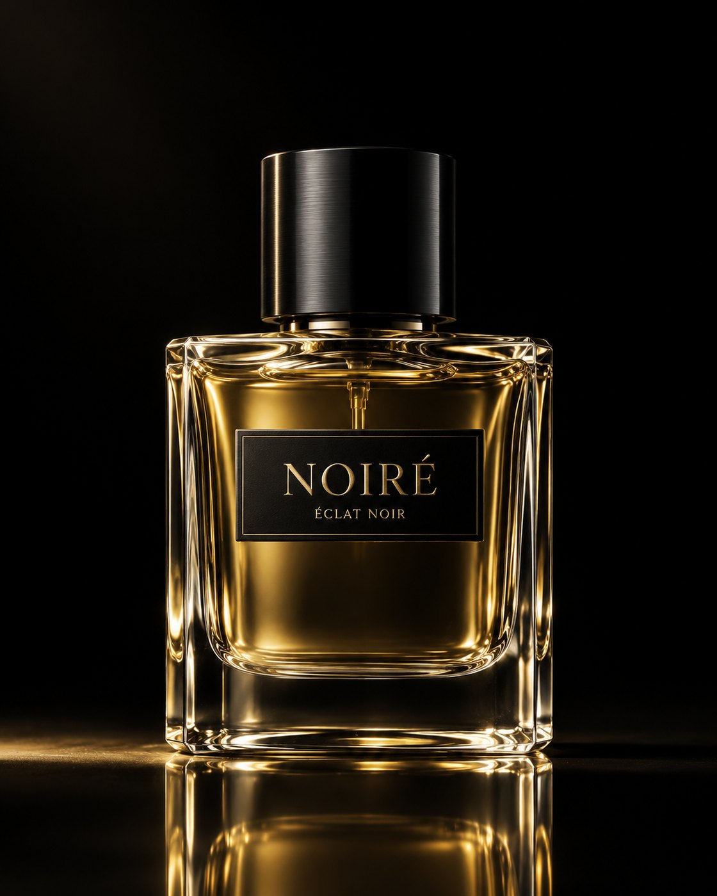
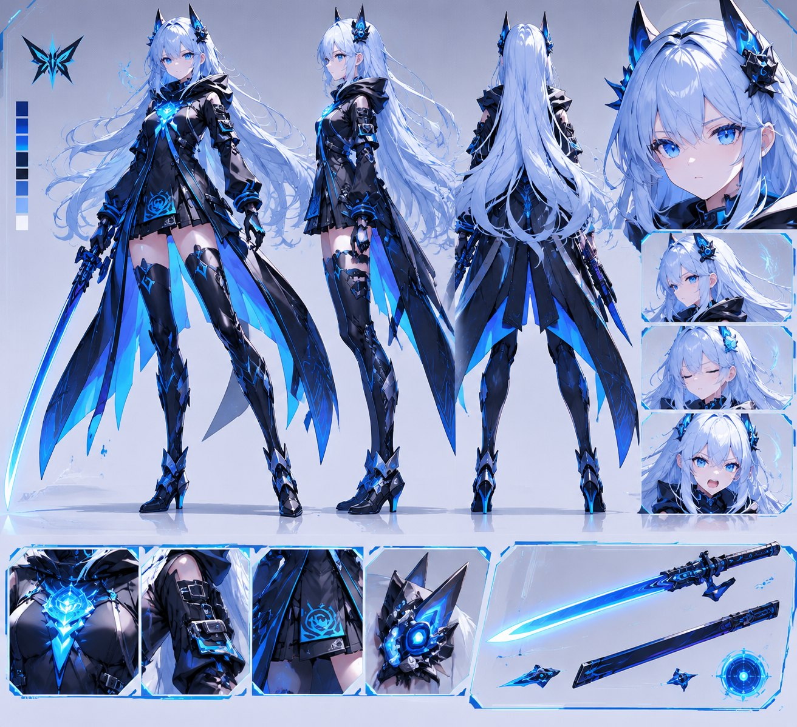
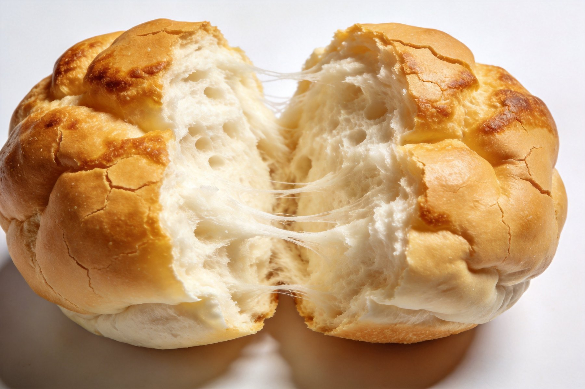

张云睿 — AIGC Visual Portfolio 2026
以模型为笔，向想象取景。
六个项目，五支短片，十九帧静帧。从永夜降临的冰蓝色星球，到一瓶牛奶的清晨——记录生成式影像在叙事与商业之间能走多远。
06项目 Projects
05成片 Films
19静帧 Stills



Selected Works
精选作品
六个方向，同一套方法：先把视觉规则立住，再让模型在规则里反复取样。
Approach
方法论
每一个项目都从一条可复用的视觉规则开始，而不是从一次随机生成开始。
生成不是随机。
先立住规则，
再让模型在规则里取样。
色板、光位、材质与版式先被确定，模型负责在这个边界内把画面填满。多轮取样、比对、筛选，直到画面与叙事对齐，最后统一调色与节奏，让一组素材变成一支片子或一套书封。
01
概念与世界观
Concept
从一句话设定出发，搭建场景、角色与色彩规范，保证跨镜头的一致性。
02
影像生成
Film
文生 / 图生视频、分镜衔接、节奏与音画对位，单支成片控制在 15–30 秒。
03
品牌视觉
Brand
产品主视觉、多视图矩阵与广告分镜，覆盖香水、3C、乳品与食品品类。
04
装帧与排版
Editorial
书封展开稿、系列化主题色、信息层级与字体搭配，一套版式支撑五册。
Contact / 联系
张云睿
数字媒体技术 · 2027 届本科生
寻找视觉设计、AIGC 影像与数字媒体方向的实习机会。作品涵盖游戏概念 PV、品牌广告与书籍装帧，可随时到岗。
- 地点
- 接受异地实习
- 到岗
- 随时到岗 · 每周 5 天及以上 · 可连续 6 个月以上
扫码浏览 / Scan to view